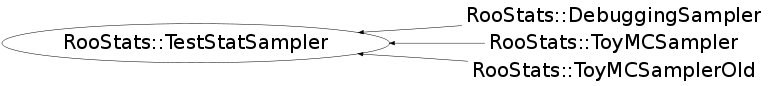

Function Members (Methods)
This is an abstract class, constructors will not be documented.
Look at the header to check for available constructors.
public:
Class Charts
{kind=link}
{kind=link}
{kind=link}
{kind=link}

Function documentation
SamplingDistribution* GetSamplingDistribution(RooArgSet& paramsOfInterest)
Main interface to get a ConfInterval, pure virtual
Double_t EvaluateTestStatistic(RooAbsData& data, RooArgSet& paramsOfInterest)
Main interface to evaluate the test statistic on a dataset
void Initialize(RooAbsArg& testStatistic, RooArgSet& paramsOfInterest, RooArgSet& nuisanceParameters)
Common Initialization
void SetPriorNuisance(RooAbsPdf* )
How to randomize the prior. Set to NULL to deactivate randomization.
void SetParametersForTestStat(const RooArgSet& )
specify the values of parameters used when evaluating test statistic
void SetNuisanceParameters(const RooArgSet& )
void SetObservables(const RooArgSet& )
specify the observables in the dataset (needed to evaluate the test statistic)
void SetTestSize(Double_t size)
set the size of the test (rate of Type I error) ( Eg. 0.05 for a 95% Confidence Interval)
void SetConfidenceLevel(Double_t cl)
set the confidence level for the interval (eg. 0.95 for a 95% Confidence Interval)
void SetTestStatistic(RooStats::TestStatistic* testStatistic)
Set the TestStatistic (want the argument to be a function of the data & parameter points
void SetSamplingDistName(const char* name)
Set the name of the sampling distribution used for plotting